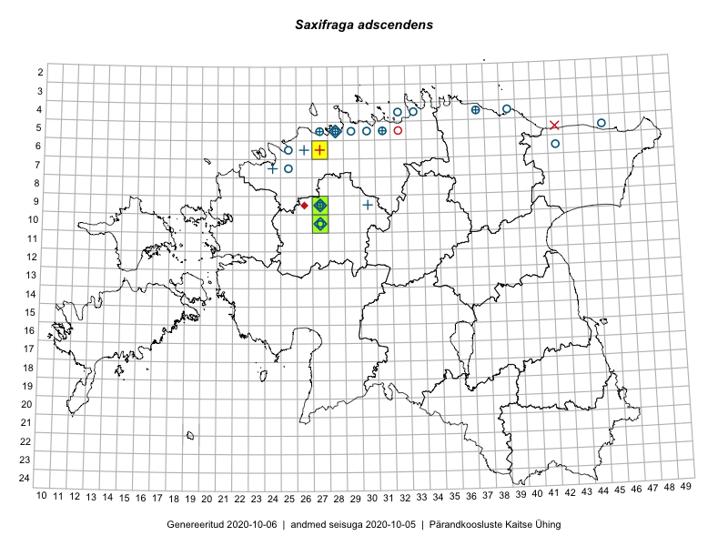

Saxifraga adscendens
Uuendatud: 2016-12-02
Kaardile koondatud taksonid: Saxifraga adscendens L.
Tagasi liigiloendi juurde

eelmine | järgmine
Kaart põhineb 4 vaatlusel. Taksonit on leitud 2 ruudust.
Viited andmebaasikirjetele
- Peedu Saar, Ott Luuk, Meeli Mesipuu, Thea Kull, Kersti Püssa, Rein Kalamees, Toomas Kukk: 2014-06-10: 10-27: ala
- Peedu Saar, Ott Luuk, Meeli Mesipuu, Thea Kull, Kersti Püssa, Rein Kalamees, Toomas Kukk: 2014-06-10: 10-27: GPS punkt
- Aat Sarv: 2015-05-15: 09-27: ala
- Aat Sarv: 2015-05-15: 10-27: ala